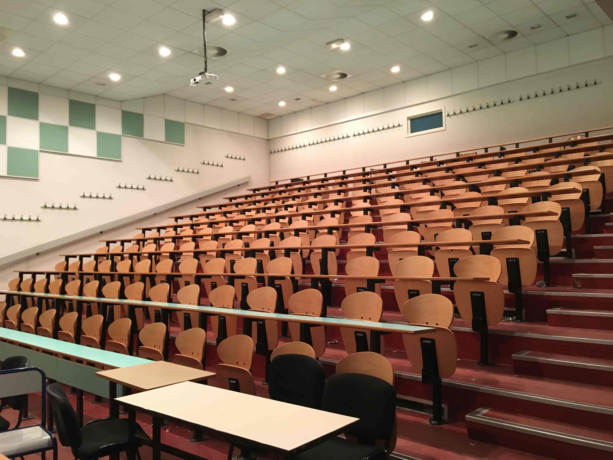
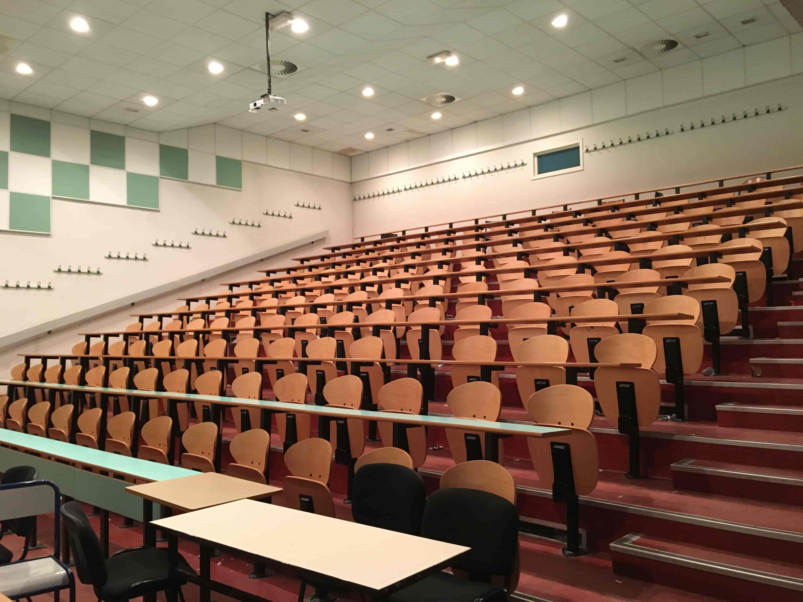

Département Informatique Metz
L'évolution technique actuelle, favorise l'accès aux systèmes informatiques.
L’objectif essentiel de ce DUT est de former des futurs informaticiens ou informaticiennes qui seront capables de concevoir, de réaliser, de mettre en œuvre et de maintenir les systèmes informatiques correspondant aux besoins formulés par les utilisateurs.
Les cours sont majoritairement à 25 étudiants en TD, 12 étudiants en TP et également la présence de Cours Magistraux(CM) en promotion complète.
Le diplôme se prépare en 2 ans (4 semestres), ou en 1 an avec une Année spéciale pour les étudiants possédant déjà un niveau bac+2.
L’IUT offre les avantages de l'universitée, avec un supplément d'encadrement.
 
